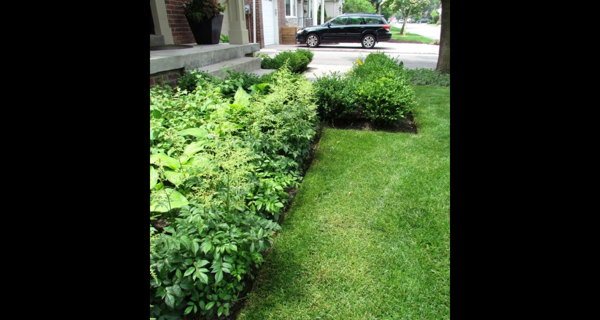

When landscaping a yard, walkways often get overlooked. We concern ourselves with pools, patios, and plant selections, but then we neglect to consider how to connect the different spaces in our yard. By ignoring paths, a garden can become disjointed because of the lack of thought put into the transitions and connections.
Not only do walkways guide people throughout your yard, they can also be used to create a mood or atmosphere. You'll want to start by determining if you are trying to create a formal or informal feeling. Then you'll need to make a number of important decisions regarding shape, dimensions and materials, which can range from simple gravel to decorative stamped concrete. Other factors to consider include your budget, the desired traffic flow, the amount of foot traffic your walkway will receive, and safety.
"Walkways have to be attractive *and* safe. Bob knows his stuff and gets it done right the first time!"


Fresh cut sod from the grassy fields surrounding your city and home, our Sod has been sewn, cultivated, watered, and grown over time...it's now ready and waiting to be installed for your new lawn.We ensure proper sodding care and cultivating practices to ensure the healthiest and strongest Sod possible for our customers. Sod installaton with Bob Summers Landscaping ensures it is done right.
"WOW! Our new lawn looks fantastic! Hard to believe we waited as long as we did, Bob and the crew made it fast and painless, and it looks fantastic! Thanks team!"
Why just have a backyard? Have your own personal paradise in less than the cost of a short family trip! Let Bob Summers Landscaping Services come out and do a FREE estimate on how to make your backyard, your own favorite holiday getaway!